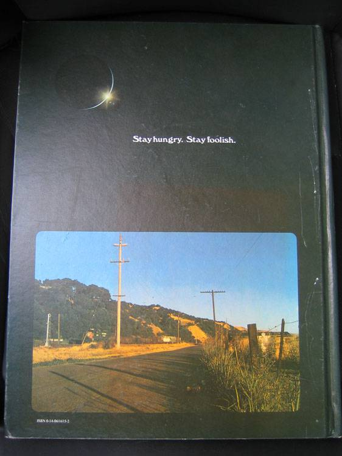

Stay hungry, Stay foolish 的原义
作者：阮一峰
乔布斯在斯坦福大学毕业演讲中说过，他最喜欢的一句话叫做”Stay hungry, Stay foolish“。
”Stewart和他的人出了好几期《地球产品目录》（Whole Earth Catalog），然后不打算再出了，他们推出了最后一期。那时是70年代中期，我跟你们一样大。
那一期的封底有一张照片，上面是清晨的乡间道路，就是那种如果你喜欢漫游，你会经过的道路。照片下面有一句话：‘Stay Hungry, Stay Foolish’。这是他们的临别赠言。
Stay Hungry, Stay Foolish. 我总是希望自己永远保持这个状态。
现在你们即将毕业，我也把这句话送给你们。“
这句话一下子就出名了，乔布斯的人生格言，谁会忘记呢？
可是，它到底是什么意思，就众说纷纭了。有人就去采访《地球产品目录》的创始人和主编 Stewart Brand，问他知不知道乔布斯喜欢他的这句话。下面就是我想分享的内容。
”对，我知道乔布斯中意这句话。因为他托人传话，他想要一份我的签名，在那一期 Stay Hungry, Stay Foolish 的封面上。这是我第一次知道，这本杂志对他很重要。”
哇，想象一下，乔布斯问你要签名，这会是什么感觉啊......
Stewart Brand 接着就解释，这句话是怎么来的。
“1966年，我发起了一个 the whole Earth 运动，想要 NASA 公布地球的太空照片，后来《地球产品目录》的名字就是这样来的。”
1958年，美国发射了第一颗人造卫星“探险者1号”，可是直到1966年，都没有公布地球的太空照片，全世界都不知道太空中看地球是什么样子。所以，就有了 Stewart Brand 的 the whole Earth 运动。
1968年12月29日，阿波罗8号拍摄了地球从月球的地平线上升起。那次航行是人类第一次完整地拍摄地球。人类有了第一批地球的太空照片。
“后来，我们就拿到了地球的太空照片，那是在一颗卫星上拍摄的，可以看到地球的完整一天，从日出到日落。我把照片排成那个顺序，我想表达一种连接，一方面是太阳的阴影在地球表面的移动，另一方面是与此同时人们在地球上的经历，他们看到日出。
我脑海中的画面是，一个漫游者日出时站在无名的路上，太阳升起来了，火车从旁边呼啸而过。这个年轻人的心情是如此自由，他有点饿（hungry），也知道得很清楚，自己对前面的道路一无所知（foolish）。”
下面就是这张封底图片。读完上面这段话，再结合实物，你就会明白 Stay hungry，Stay foolish 到底是什么意思，以及它为什么能打动20岁的乔布斯，30年后还记得清清楚楚。
